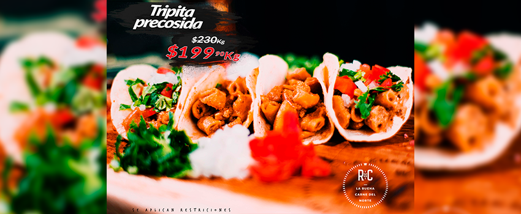
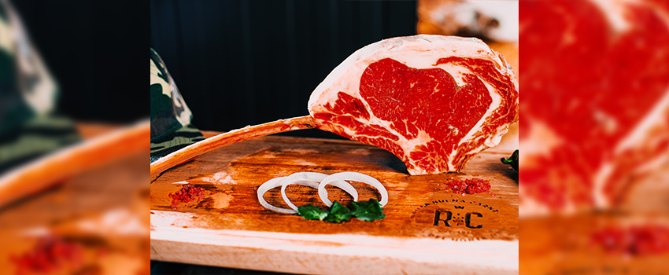
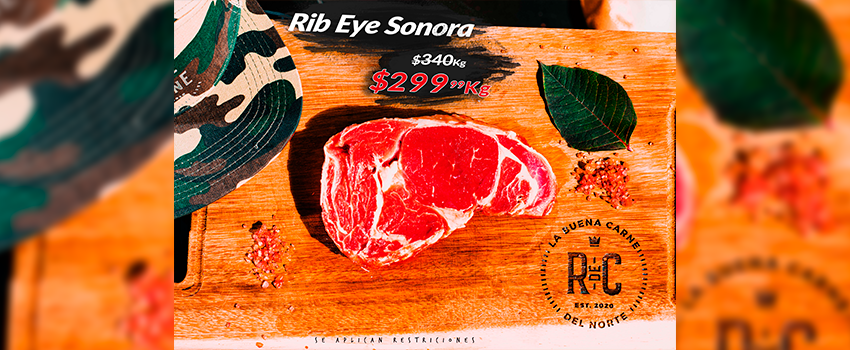

Tripita Precosida 3/6/2015
Para identificar que una tripa está bien cocida debemos comenzar con el color. Una tripa cruda es de color beige muy claro. Cuando ya está cocida su color cambia a rosa y como más nos gusta es completamente doradita. Vas a percibir que no está completamente cocida cuando la carne esté chiclosa.
tomahawk Hoy
El Tomahawk Steak es un filete grueso con costilla y una presentación impresionante. La gran infiltración de grasa intramuscular (marmoleado) e intermuscular junto con el hueso de la costilla le confiere un gran sabor y una jugosidad excepcional.
Rib eye sonora Mañana
Esta deliciosa carne cuenta con alto grado de marmoleo, además de ser muy suave y con un sabor intenso lo que lo convierte en una opción ideal para asar u hornear.